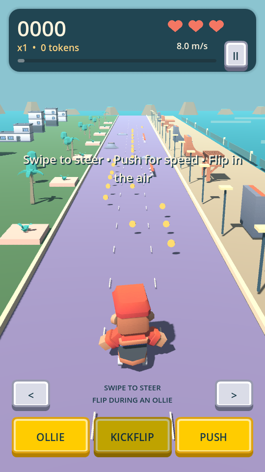
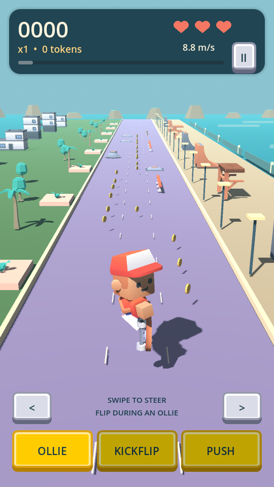
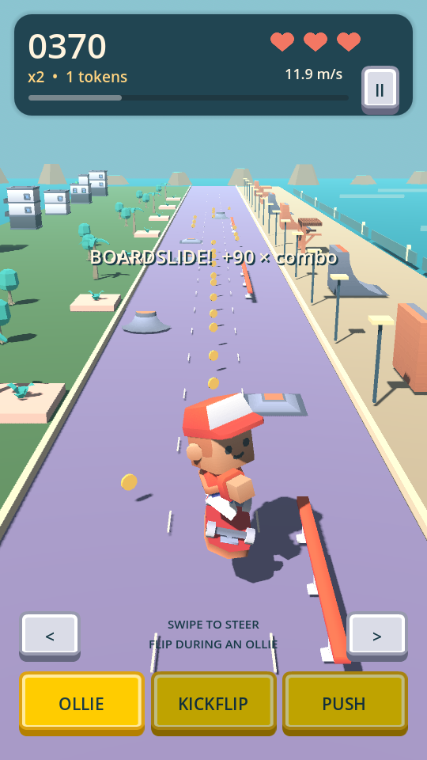
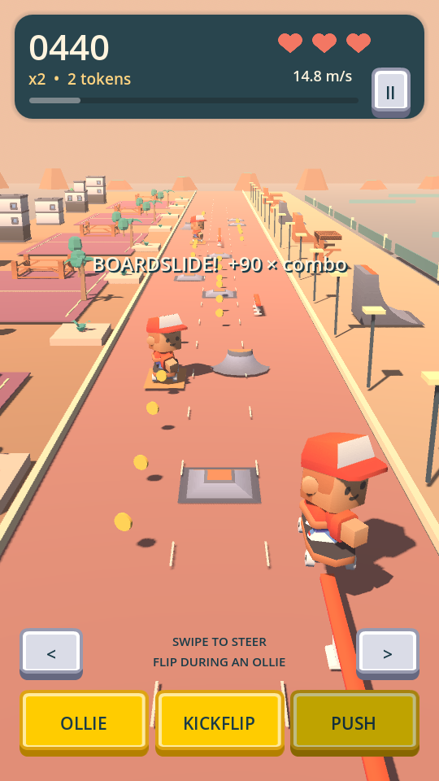
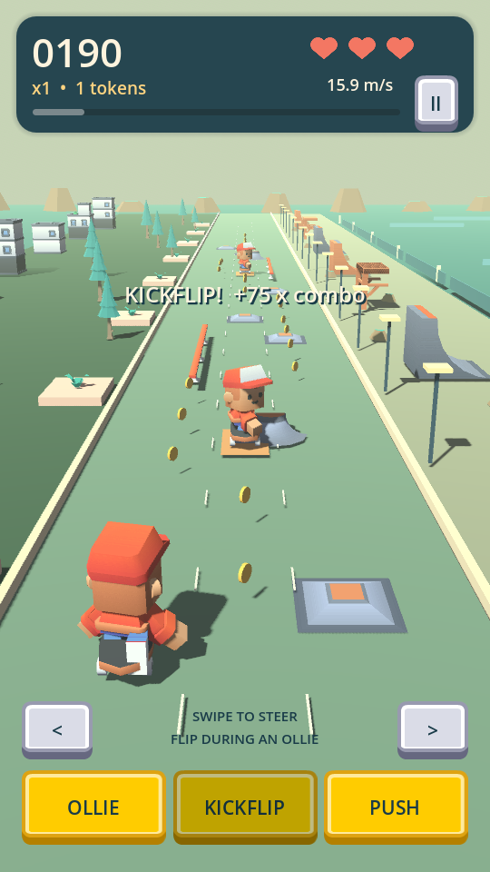
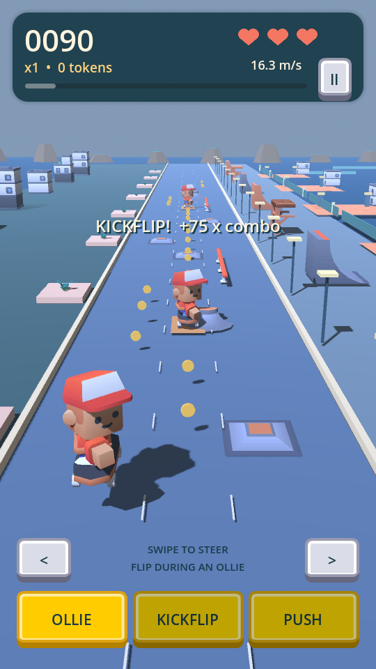

Expansion review · version 1.1.0 (2) · Web preview
A more expressive ride
Forgiving rails
Rails vary from 3 to 12 world units, matching their visible geometry. Wider entry timing and a landing grace window help connect boardslides. Roll into one without popping and it costs a heart.
Intentional tricks
Ollie over bumps for +60 × combo. Kickflip during a jump and land for +75 × combo, or +150 from an obstacle ollie. Pop off rails with OLLIE; steering off makes a short drop.
Build momentum
PUSH faces the skater forward and plays a stroke. Repeated taps build a capped boost; coasting and collisions slow it down. Slower skaters share the lane, with more traffic later.
Actual updated gameplay
These are genuine desktop runtime frames from completed automated rides. Test profiles unlock later levels directly; the skating, trick scores and payouts shown are produced by the game. They are not physical-device screenshots.

PUSH faces forward; the skater returns to a sideways coast.
The board flips only after the KICKFLIP action.
An intentional rail ollie can chain into a kickflip.
Sunset Courts · lines 31–40 · warm courts and moving skaters.
Pinecrest Commons · lines 41–50 · pines and muted green concrete.
Harbor Lights · lines 51–60 · cool dockside scenery.Verification and review notes
| Area | Evidence |
|---|
| Rules / saves | 229 checks pass, including all 60 routes with stock gear. |
| New mechanics | 154 checks pass: rail boundaries, timing, push limits, collisions, trick payouts, old active saves, gestures and 60-level progression. |
| Lifecycle | 30 checks pass: pause, background, Back, all full-screen service gates and earned reward idempotency. |
| Rendered play | Lines 1, 31, 41 and 60 completed and saved using actual game actions. Native evidence and artifact hashes are in the linked acceptance record. |
| Web | Visible controls, keyboard actions, repeated paused inputs and saved midair trick recovery were exercised in a real browser. |
This 1.1 expansion contains 60 lines across six neighborhoods. GitHub Actions validates the source and builds this Web preview. Android uses sample ad IDs and disabled blank Play Games mappings. Physical touch, sound listening, human difficulty and production configuration still need owner review.
Full expansion acceptance and Android artifact paths · Local Android/Web acceptance artifact hashes